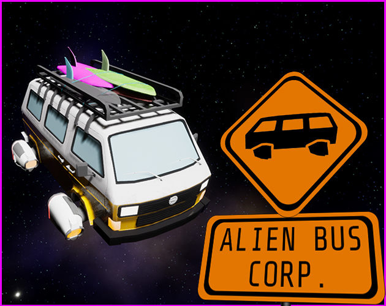

PRESS RELEASE
Alien Bus Corp. is a space-themed, action, open-space game about a bus company operating in an eternal space environment.
The space is full of various planets and planetary objects, each having unique landscape futures, as well as unique physical properties.
The main objective of a player in the game is to explore space and collect resources in order to save the home planet.
Key Features:
- Space driving - multiple movement modes: open-space driving, landing mode, on-planet driving
- Constantly forcing player to action - There is always a need to gather resources for the planet
- İmpressive battles - You need to take a fight with the space police and antagonists’ group.
You are working in an Interstellar Delivery Company and you have been chosen to help your home planet. The planet needs resources to survive and only you can save it. Drive the bus, gather the necessary resources and fight against the antagonist group that wants to take control over the planet.
Main mechanics of the game include space flight with a unique model, landing mode where you need to control the angle of the bus as well as the torque, and on-surface movement that allows you to control a bus like a normal car.
Players are not alone in this huge environment, however. There are patrol stations monitoring the area and if you break the rules, hot pursuit starts. Running away from them is not a good solution as they will follow you and they can even teleport, so be careful.
The game presents an antagonist group who will try to reach you when they see you. When you die or get captured by the police, you will be fined and if your balance goes below zero, you will be constantly chased by the antagonist group.
You will, of course, need to upgrade your vehicles to stand against raising problems. That’s why we have upgrade stations and upgrade centers in the cities. Upgrade system modifies characteristics of thrusters, controls, fuel system, vehicle body and guns.
There are stations in the solar system where a player can take orders for delivery and accomplish them by reaching the destination stations. The length of the route affects the delivery price. Also, there are fuel stations where players will be able to refill orbital and landing fuel. The further you go from the fuel supply points, the more you have to pay for. Gatherable resources, called energy crystals, are available which refills all three fuels, being orbital, landing and warp fuels. The warp fuel can only be refilled using these crystals.
The vehicles presented in the game can either be purchased from the in-game market or can be found by exploring the planets.
Project name: Alien Bus Corp
Platform: PC
Game type: Singleplayer
Genre: Action, Flight Simulator